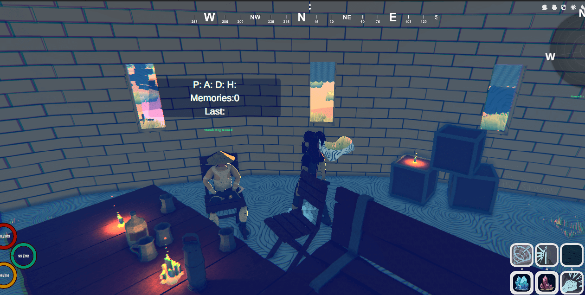

Gamedev log 9# - ARPG Shift and Atmosphere
Youtube is eating my time, but it has its perks! 🙂
Lately, I’ve been focusing a lot on reaching my goal of 10k subscribers on my ARPG-oriented channel. There have been a lot of updates to my favorite games, like Diablo IV, Path of Exile, Grim Dawn, and Last Epoch. Even though it may not sound that interesting for game development, it actually is.
I’ve always struggled with the repetitiveness of RPG games and the limitations they often impose. I wanted to give my players something more so they could stay engaged with my RPG a little longer. That’s why I decided to implement several mechanics inspired by my favorite ARPGs.
Despite having a bit less time, I’ve used it to fine-tune models, the weather system, and the overall atmosphere. Check out some of my latest additions, and get ready for an upcoming blog post about dungeon generation, which will be released soon!
It’s in the details
When I talk about the feeling of the game, it’s not just about colors, weather, or lighting; it’s also about the details in interiors and their interactivity. Check out some of the latest additions!
NPCs are also more interactive now.

The new enemy type “cannibals” will be showcased soon, in the meantime look at their village.
New auras on magical influenced items.
Oh yes wondering shrine. Perhaps a quicker way to teleport around the world? Maybe…
Magic is in the air
I’ve completely reworked the magick system. From now on, players will have six sockets in their inventory, organized by power from left to right. Each socket represents a slot for an anomaly container that can be equipped to provide not only an active skill to the talent tree but also additional stats or act as a support gem.
While players will be limited to certain combinations, they can freely mix and match any magic or anomaly school, including anomalies that simply enhance all skills or unique ones that offer temporary buffs or curses. To acquire an anomaly, players must advance in their Anomalist profession, enabling them to capture higher-level anomalies from randomly appearing sources around the world or specific dungeons. And by the way, you’ll also need container jars and other items to make it all work!
Here you can see the slots for the anomalies.
There is an anomaly event in the world for you to capture. Beware its not simple.
Minigames
I’ve created some minigames. Right now, they’re more of a proof of concept, but they work—I can lock certain doors or chests for the player. I plan to integrate these with the Thief profession, making them more impactful in the game. So far, sneaking, stealing, and lockpicking are implemented, though they aren’t quite working as I’d like and aren’t necessary to complete the demo locations.
The lockpicking minigame is both sound-based and visual, with a 2D sprite UI where players need to move locks to randomly generated positions. I can assign different variables to adjust the difficulty of each lock, making some harder to unlock than others.
Merchant
One of the biggest changes in development has been the introduction of a new trading mechanic. It’s simple to describe but extremely challenging to code (for me).
When you approach a merchant, he’ll offer only a selection of items from his store, not everything. This encourages players to visit other merchants in different cities. Each merchant will also assign specific prices to his items for the week, adding an extra incentive for players to shop around. Merchants will evaluate the items you bring to sell and decide which ones they’re interested in buying. They’ll also set a purchase price for each of your items, valid only for that week. All of this is persistent and can’t be manipulated by reloading; it resets each week. This system makes trading more dynamic and strategic for players.
QoL
With the new merchants and item handling system, I needed to add some quality-of-life functions, like item splitting, withdrawing all items, and simple sorting. Nothing to show right now. Sorry.
Fulgurites
Another big update includes the addition of fulgurites and other persistent bonuses. Fulgurites are similar to Path of Exile’s map modifiers, but in the form of elixirs that players can craft through a unique profession and consume to boost (or sometimes reduce) stats like XP gain, gold gain, and other attributes critical for farming and grinding. This system is currently in testing but is already implemented as a death penalty mechanic: upon death, players receive a lasting debuff (e.g., -30% XP and -30% HP) that can only be removed at a shrine of revival—for a price. The shrine of revival.
Runes and Enchants
Itemization is often one of the most criticized aspects of ARPG games, and I know I probably haven’t perfected it either. But I aimed to combine my favorite systems:
Each item can have different rarities: normal, magic, rare, epic, cursed, legendary, unique, and more. Each item can have fixed (white) primary stats—these are base item stats that don’t change. Each item can have random (orange) stats. Items can be enchanted, either through crafting or naturally on unique items. Items can belong to a set—completing a set grants various bonuses. Items can have a random number of slots for runes, gems, or other enhancements. You can combine runes and gems to create powerful combinations or even entirely new items, similar to Diablo 2. There are also numerous small details, like displaying stat changes when equipping an item over another, item prices, 3D models, icons, item types, descriptions, and more. I’m also considering updating the game’s font, but that’s a plan for the future.
When I say “each item can have†these features, I don’t mean every item will have them all. For instance, standard white items will never be as impressive as unique items. Balancing all of this will be a big challenge, so more work will go into refining it. My goal, however, is to make even “scrap†items like white, magic, or rare items useful—not just to sell, but to craft with, similar to Path of Exile.
There is probably more…
There’s a ton of new stuff! New music is in the works from Filip, new ragdoll animations for animals, a plugin for realistic foot landing for animals, new factions and their interactions, a fully implemented quest system, and persistent pets with threat mechanics so they can tank for you.
We’ve also added a huge number of new 3D models, both original and modified versions from Synty. And there’s probably more that I’ve entirely forgotten about—it’s been half a year of solid development.
I’m not making any promises this time; I probably wouldn’t stick to them anyway. So… cya when I cya!